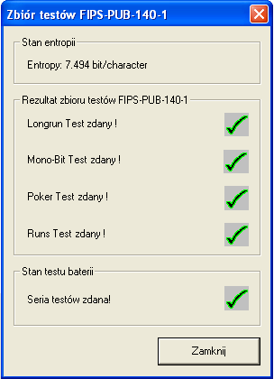
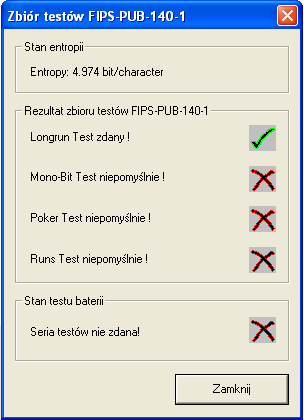

Okno to jest dostêpne po klikniêciu w menu na Kryptoanaliza \ Analiza losowoœci \ Seria testów FIPS PUB-140-1. Wymaganiem wstêpnym jest za³adowanie dokumentu o d³ugoœci conajmniej 2500 bajtów.
Przyk³adowe okno dla serii testów FIPS-PUB-140-1 wygl¹da nastêpuj¹co:

W tym oknie nie ma ¿adnych parametrów do wybierania. Ka¿dy z testów FIPS-PUB-140-1 jest wykonywany automatycznie.
Entropia nawi¹zuje do entropii egzaminowanego pliku. W przypadku ka¿dego testu u¿ytkownik jest informowany, czy test zakoñczy³ siê sukcesem czy te¿ nie.
Seria testów jest zakoñczona sukcesem, kiedy wszystkie pojedyñcze testy zakoñczy³y siê pomyœlnie. Jeœli jeden lub wiêcej testów zakoñczy³o siê niepowodzeniem, wtedy okno dialogowe wygl¹da nastêpuj¹co:
